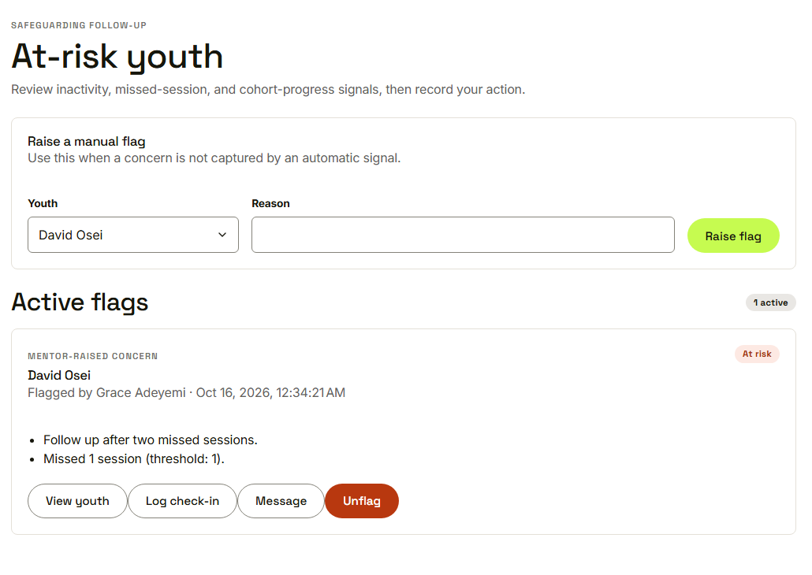
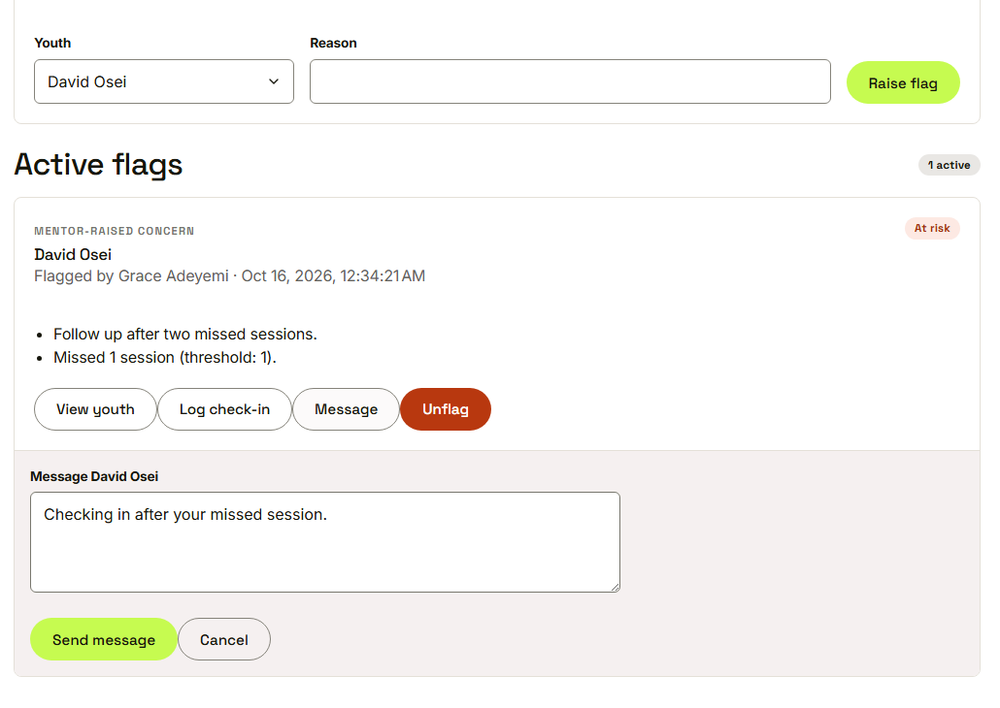
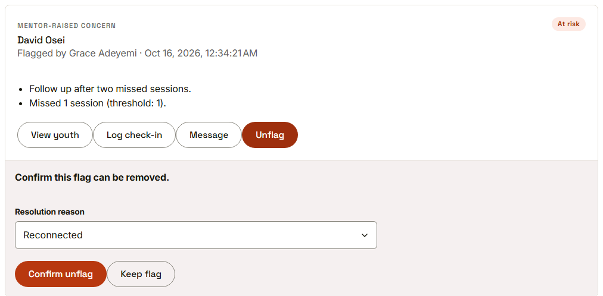
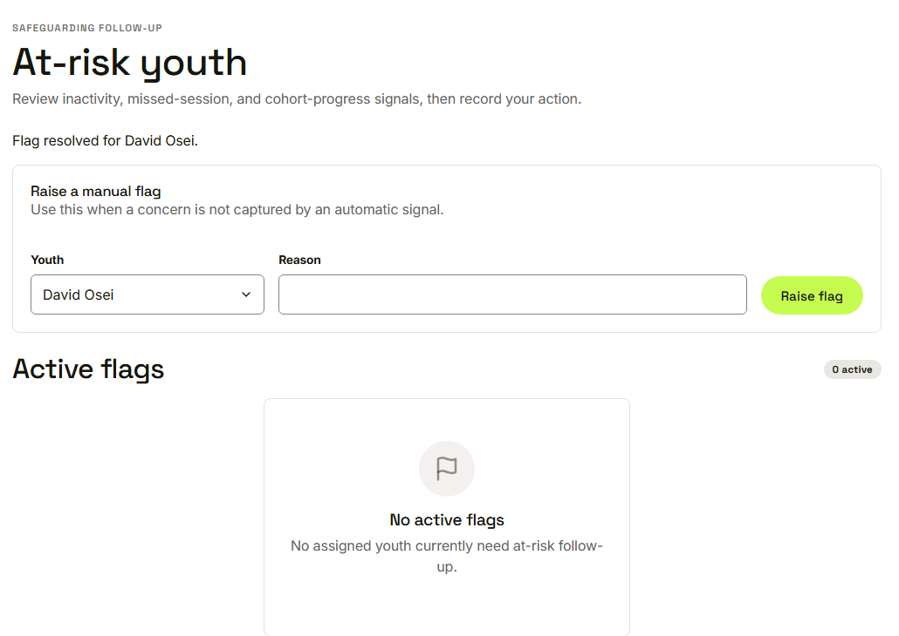
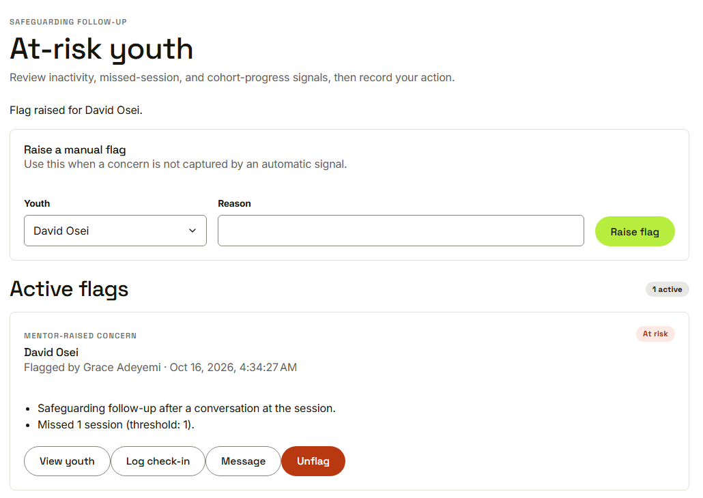

Waypoint · Journey 16
Flag at-risk youth
Noticing, responding and resolving
Active flags

Reasons, who flagged and when
Respond on the card

Message, check-in, view, or unflag
Unflag asks for a reason

Confirm, with a resolution reason
No active flags

The youth leaves the list
Raise a flag by hand

A reason, and the flag is back on the list
Things to remember
Reasons, who flagged and when
Automatic signals or the mentor
View, check in, message or unflag
Resolution reason, audited, director can see